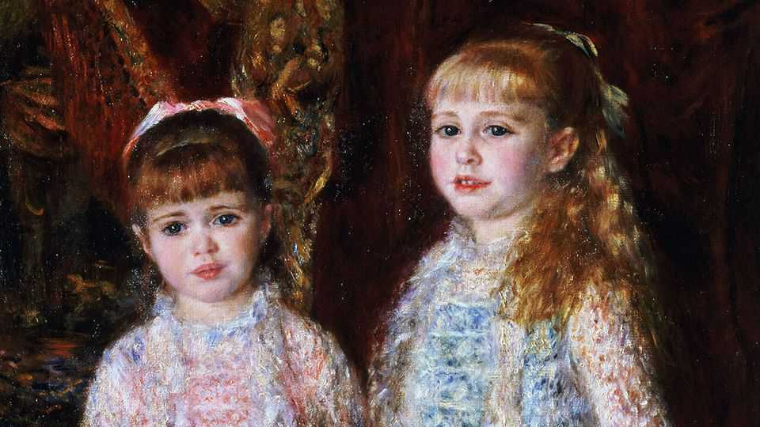

Money, sex and bigotry: what one painting reveals about France
“The Renoir Girls” uses a bright canvas to sketch a sombre history

Aug 20th 2026
IT WAS CALLED “the capital of the 19th century” and “modern Babylon”. To those living during the Belle Époque, which stretched from the 1870s to the onset of the first world war, Paris felt like the centre of the world. And at the very centre of Parisian life were the Cahen d’Anvers, a Jewish banking family. They held salons, threw lavish parties and counted celebrated writers, including Marcel Proust and Guy de Maupassant, as friends.
The childhoods of the three Cahen d’Anvers daughters were immortalised by Pierre-Auguste Renoir in commissioned portraits. One, of Alice and Elisabeth holding hands (see picture), hangs in the Museu de Arte de São Paulo. It looks as though everything about the girls’ lives, save their ruffled dresses, was smooth. In fact, the painting “reminds us that nothing and no one is quite safe from the hands of time or the evil within humanity, apart, sometimes, from art itself”, writes Catherine Ostler, a historian, in a new book.
When you gaze at Renoir’s pretty paintings, several things are obscured from view. One is paternity. Rumours abounded that Louise, the matriarch of the Cahen d’Anvers family, was the paramour of Charles Ephrussi, an art-loving critic and collector. It was a time of “rebellious, emancipated, intellectual feminism”, when wealthy women were free to hold salons and live more independent lives. There were whispers that Alice might be Ephrussi’s daughter. Ms Ostler uses a DNA test of a descendant to show that she probably was (the same may have been true of her brother, who was named Charles). This is not, then, your average portrait.
The painting also masks the antisemitism that would change the girls’ lives. When it was painted in 1881, France was ostensibly in a tolerant period (though after receiving a late payment, Renoir wrote to a friend complaining that the payment was “stingy” and declaring that “I really give up on the Jews”). Then the Dreyfus affair—in which a Jewish army officer was falsely accused and convicted of passing secrets to Germany—laid bare people’s prejudices and jealousy. Between 1807 and 1914 some 880 Jews in Paris converted to Catholicism; about a quarter of them did so in just three years, 1895-97, when the Dreyfus affair was most heated.
One of them was Elisabeth (in blue), who chose to be baptised at the age of 20. Spending most of her life as a Christian, however, did not protect her. The collaborationist Vichy regime began to rule France, and a mayor whose family had mingled with the Cahen d’Anvers for generations certified that Elisabeth, then 69 years old, was Jewish.
Suffering from severe arthritis and unable to walk without help, she was arrested by the Nazis, who sent her to Auschwitz, where she was probably murdered on arrival, if she had survived the 55-hour train journey. Ms Ostler focuses on the many betrayals that facilitated this fate. The Cahen d’Anvers had fought in the first world war and been generous patrons of France, including donating their chateau to the state. And yet the country turned on them.
Ms Ostler came upon the Cahen d’Anvers while reading “The Hare with Amber Eyes”, which masterfully traces art through time (the author, Edmund de Waal, inherited sculptures bought by Ephrussi). She has doggedly dug up clips and correspondence that evoke the Belle Époque. Sometimes, though, “The Renoir Girls” gets too bogged down in social minutiae that must have preoccupied the Cahen d’Anvers. Few really want to know which Rothschilds were at weddings, what colour the bridesmaids wore and whether the press preferred Louise’s previous hairstyle. But the broader themes—about the hidden history of objects, and what art captures and obscures—are heart-rending and memorable. You will not look at another 19th-century portrait the same way again. ■